Running the solution
Deploy the case solution in Workflow Center
- Login to Workflow Center and open the Case Solution named
Denim Compute Auto Claims:

- Click the deploy icon in the upper-right corner of the Case Builder:

Create Case security configuration
- In the Workflow Center, select the solution and click the contextual menu and then
Advanced.

- With the
Denim Computesolution selected clickActions, thenManageand thenSecurity Configuration.
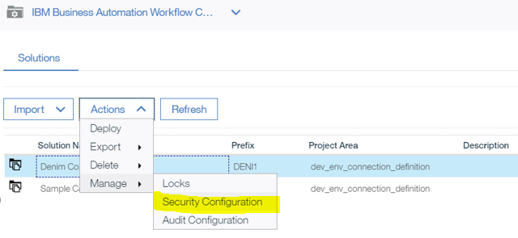
- Select the option to
Create a security configurationand clickNext.
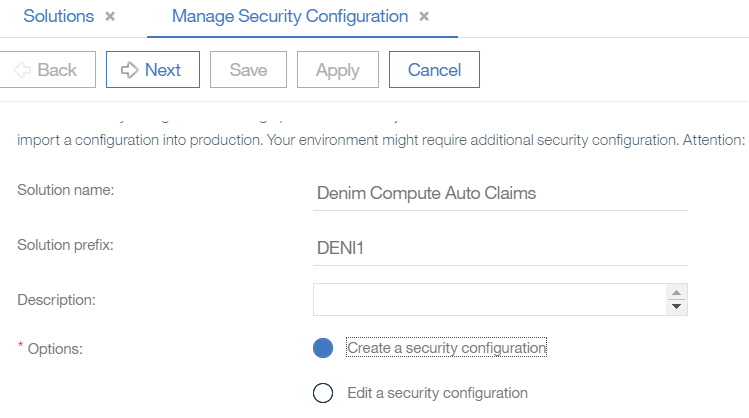
- Provide a
Security manifest name(e.g.denim_security_config) and clickNext.
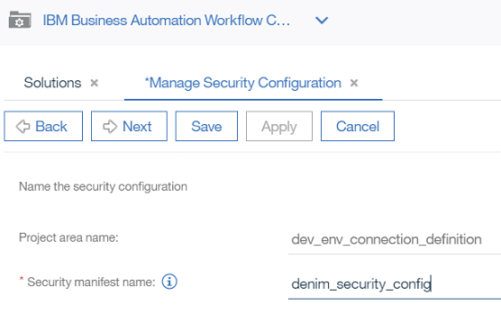
- Set permissions against the security roles (in this example all permissions are assigned to each role) and click
Next.
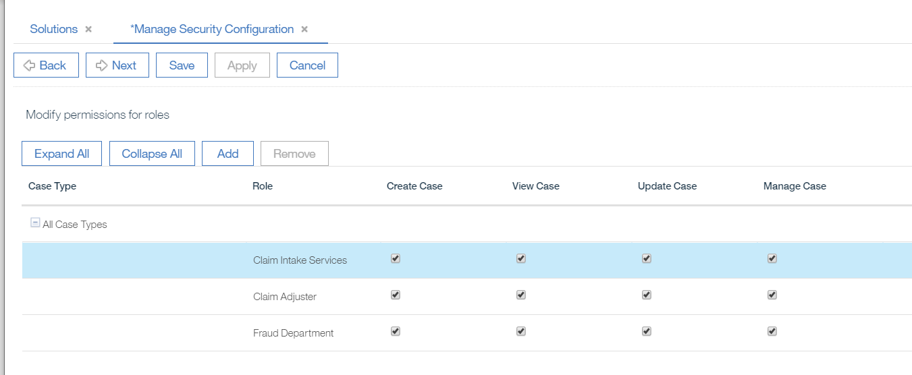
- In this step, you set the administrators. You can add administrators besides the pre-defined one if you want, by clicking the
Addbutton, or you can just clickNext.

- In the
Add Users and Groupsmodal dialogue you can add users or groups. You start typing partial names and then click the magnifying glass icon to find matching users that appear in theAvailablesection. You can then use the arrows to move betweenAvailableandSelectedand when done you clickAddto complete. When done with this section clickNextto continue.

- Next you map groups and users to the Case roles. Select each role and click
Addthen follow the earlier instructions for how to find and assign users and groups.
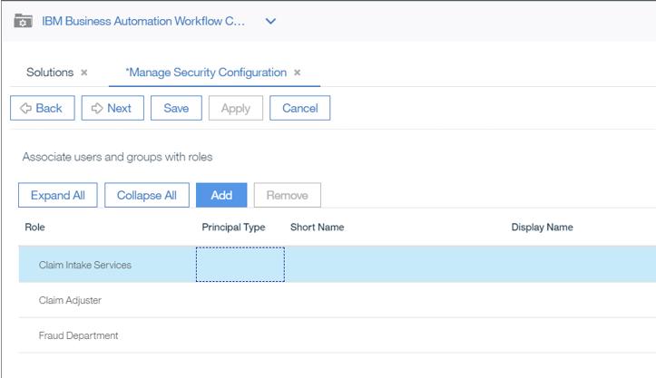
- In this example, we have just added a default user to the
Claim Intake ServicesRole. You repeat these steps for the otherRoles.
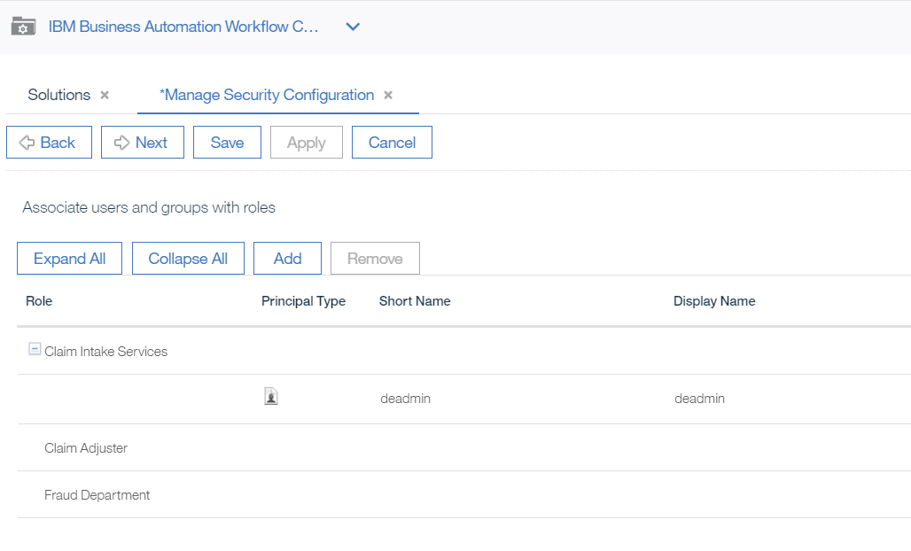
- Here is the final situation, where example users are added to each role (if you want a more realistic scenario you should setup different users and groups and assign them to the roles). Click
Nextwhen done with this section.
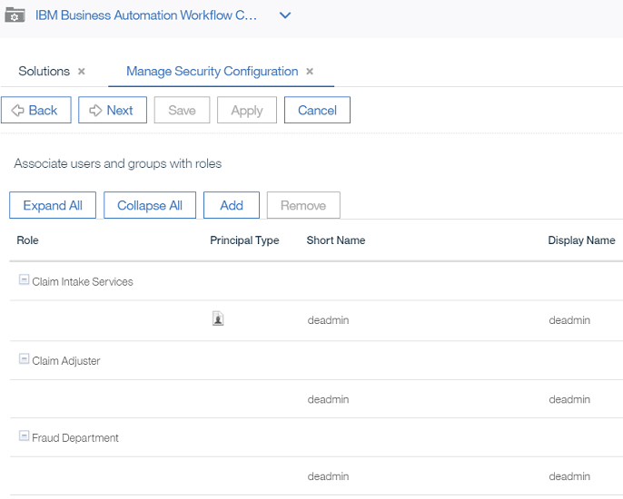
- Now you can check the box next to
Apply the security configurationand clickApply.

- You should get confirmation that the security configuration was successfully applied (you can then
Closethis dialog).
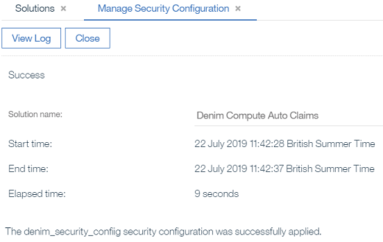
- Note if you ever need to review or change the security configuration settings you can launch it again and choose the
Edit a security configurationoption as shown here.

Create BPM user groups
-
The solution has a number of BPM teams defined that need to be mapped to users and groups. To do that, launch the Process Admin Console and then select
Server Adminsection. -
Open
User Management, selectGroup Managementand typedeniminSelect Group to Modifyand you should see the groups that have been created as a result of the team definitions.

- You then need to assign users and groups for your environment against those pre-defined groups. Here is an example where we have assigned a number of users to the
denim-adjustersgroup.

Configure servers
The solution integrates with the ODM and ECM components by using defined servers. By default, these are mapped to the environment that we used for testing purpose. Obviously, you have to re-map these servers to your own cluster environment. To do this, use the following instructions:
- First, ensure that the deployed BAW solution is activated. Select it in the Workflow Center and click the
View Detailsicon in the lower left corner of the tile.
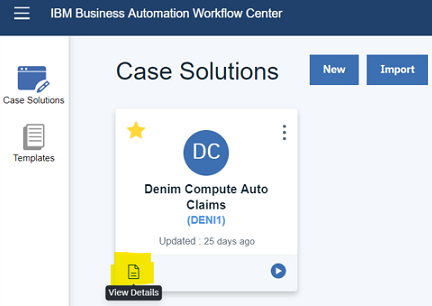
- Next choose the
Snapshotssection, select your snapshot (NB: the latest available snapshot is now v0.10.0) and from the contextual menu youActivateit.
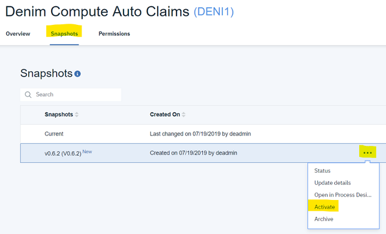
Note the next steps reference environment variables which require information from the deployment of the micro-service so if you have not completed that yet then go to that section and return here to complete the BAW servers configuration.
- After this you can now go to the
Process Admin Consoleand you should see the snapshot in the list ofInstalled Apps.
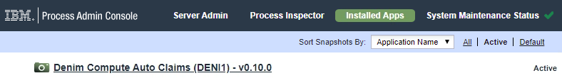
- You click on the snapshot and then select the
Serverssection and you should see the two server definitions used (DenimODMServerfor the referenced ODM Sever andIBMBAWfor the referenced ECM server).
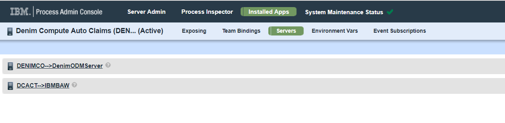
- You should change the settings for the respective configured servers to match how you installed your environment (the
Hostname,Port(if non standard) and user credentials (where relevant) need to be configured).
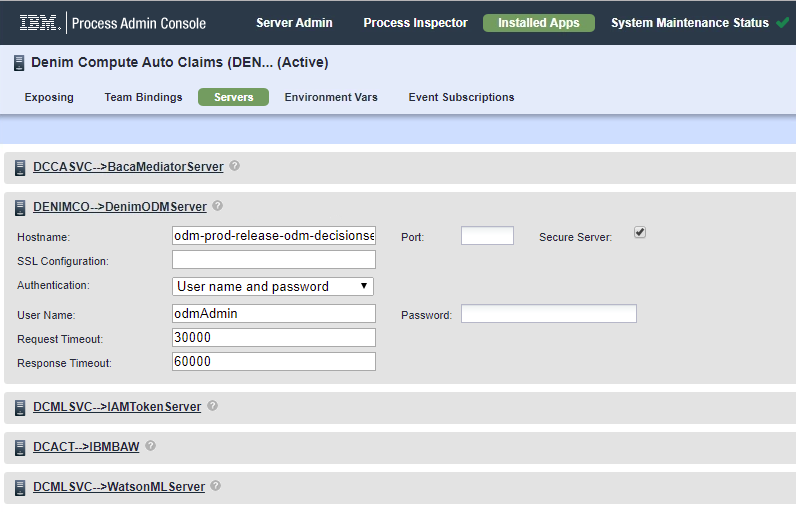
- You should provide entries for the highlighted environment variables (note for
BACAyou get these values from theAPIsection of the administration console,bacaAuthneeds to be Base64 encoded of username:password).
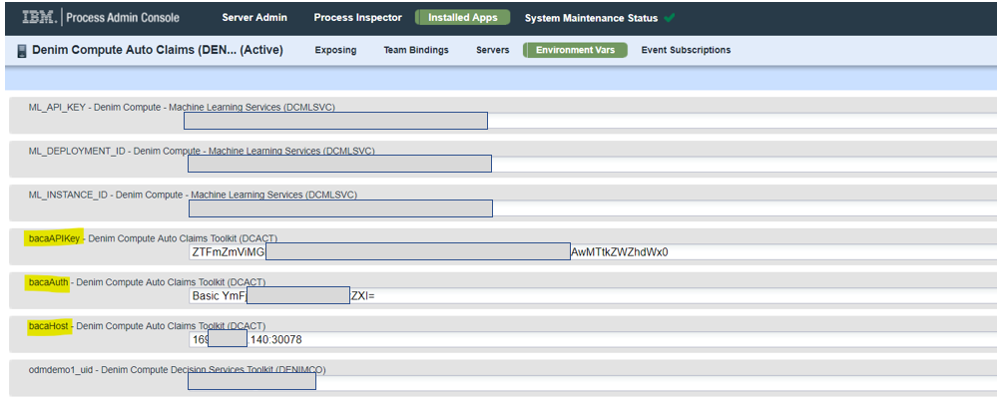
Configure BACA ontology
Currently Business Automation Content Analyzer (BACA) only allows for the import and export of an entire ontology, there is no merge capability of selective import. Therefore we recommend that you backup any existing ontology before proceeding.
- First use the
Export Ontologyoption as shown and save your existing ontology.
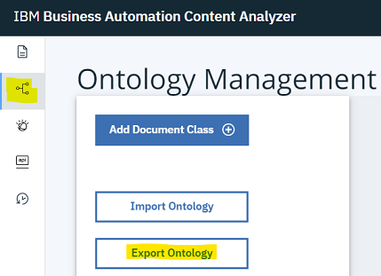
-
Then use
Import Ontologyand select thedc-baca-ontology.jsonfile. -
You should now have an ontology similar to that shown below:
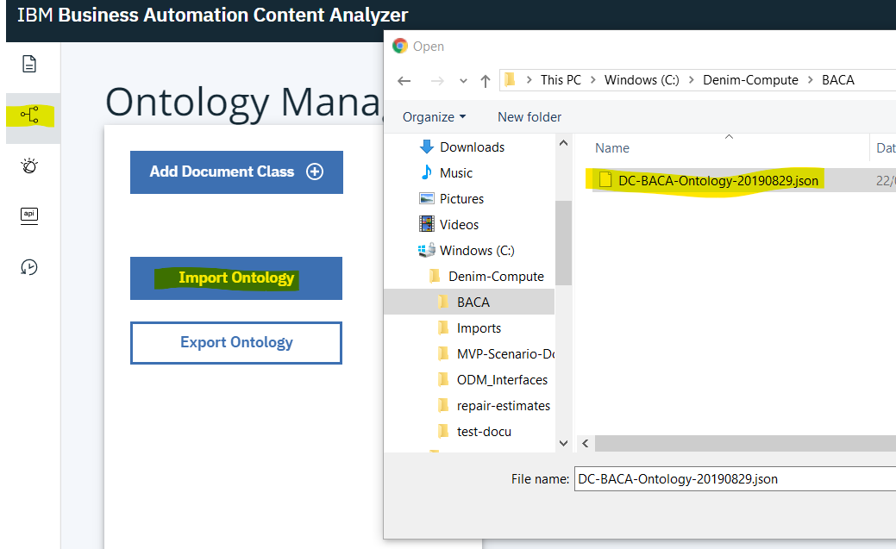
When you are finished with trying out the BACA scenario you can re-import the saved JSON export of your original ontology.
Deploy the BACA mediator micro-service
NB: The following instructions are valid for an OCP 3.11 cluster.
Configure GitHub repository
We recommend using a secure private repository rather than a GitHub public one; the following instructions assume that is the case. The starting point is that you should fork this repository so you can then configure your own security settings.
- Generate an SSH key pair, making sure to specify the flag for no passphrase as shown below.
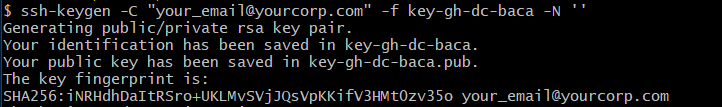
- In your target GitHub repository go to
SettingsthenDeploy keysand clickAdd deploy key.
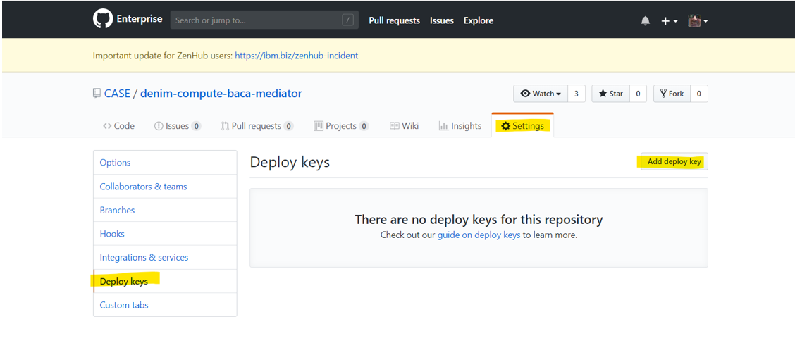
- Provide a meaningful title that shows the role of the key (in our case to allow to deploy source code to OCP), upload the public key that was generated earlier and click
Add key.

- You should now have something like that shown below:
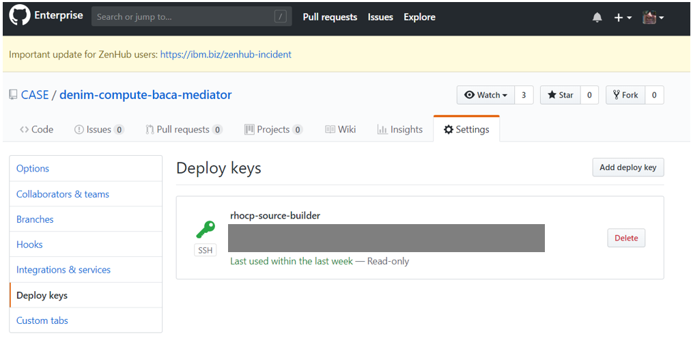
Create a project
- From the OCP web console select the
Create Projectoption.

- Provide a name (we suggest something like
baca-mediate-app) and clickCreate.
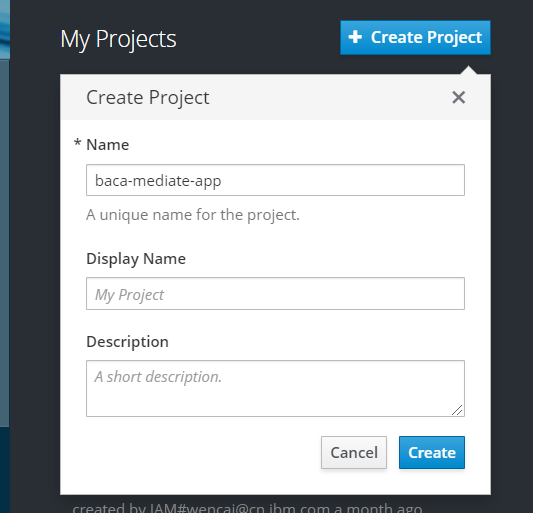
Create a secret
We need to create a secret to reference the SSH key generated earlier for interacting with the source repository in GitHub.
- In the newly created Project, select
Resources, thenSecretsand clickCreate Secret.
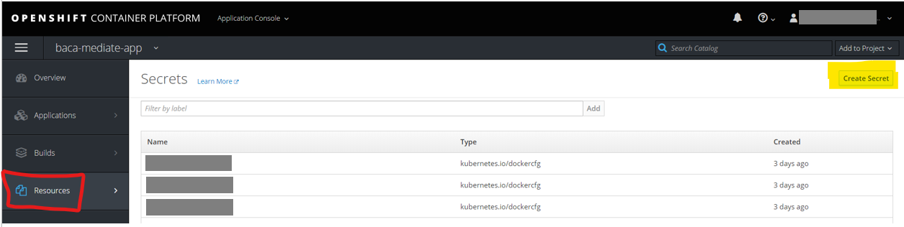
- Select
Source Secret, enter the namedc-gh-baca-mediator-secret, selectSSH Keyand clickBrowse..and then find the SSH private key file generated earlier.
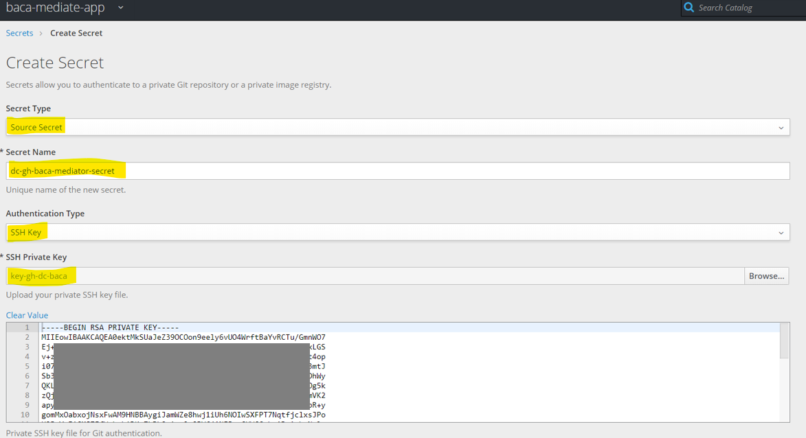
- Check the option to link the secret and choose
builderas the targetService Account, then clickCreateto finish.

Deploy using Source to Image
There are a number of options for deploying to OCP, we are going to use Source to Image (S2I) which directly builds from a source code repository such as GitHub.
- Click
Add to Projectand select theBrowse Catalogoption.
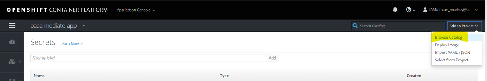
- Find and select the
Node.jsoption which launches a dialog as shown here.
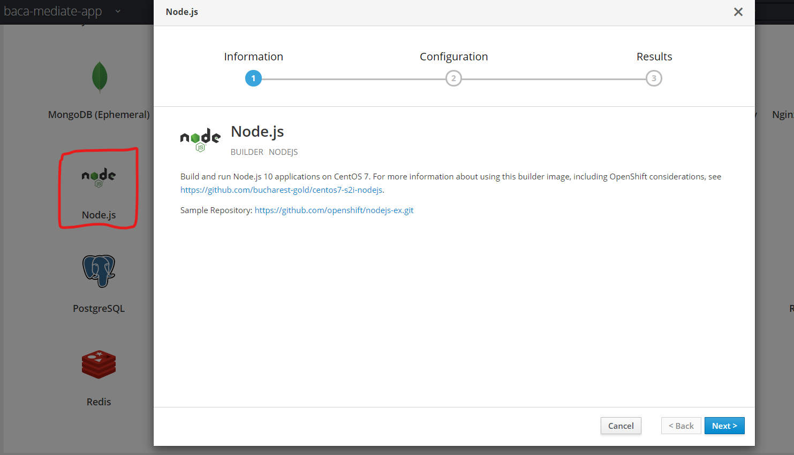
- Supply an application name and provide the SSH URL for the target GitHub repository. Then it is important to click the
advanced optionslink as we need to configure some non-standard items as this is a secure repository.
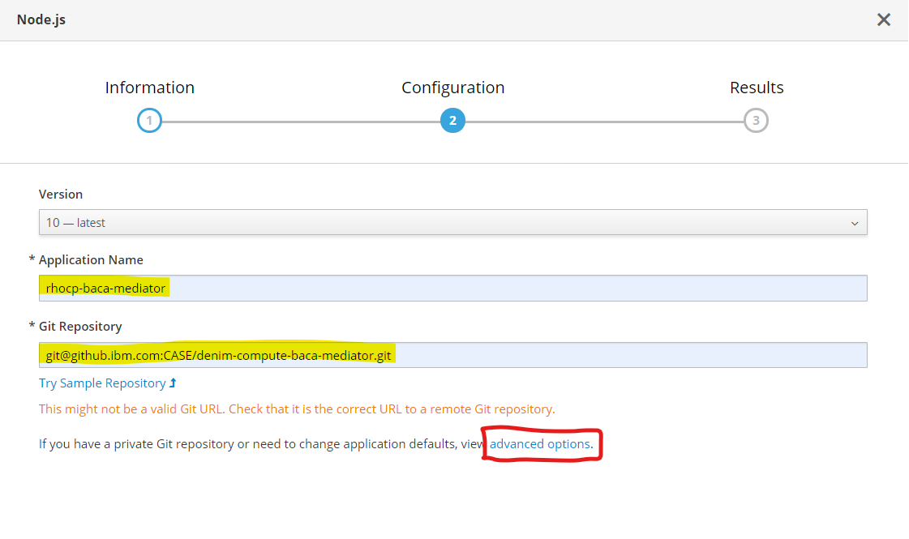
- Find the
Source Secretsection and select the earlierSecretthat you created.

- There are many other options available, but we want to go with the defaults so scroll down and click the
Createbutton to complete.

- A number of Kubernetes resources will now be created including a Build Config and Build that will pull the source and build a deployment. When done on the overview section you should see summary information for the Deployment Config including that it has one pod (note in a realistic environment we may want to set this to have more than Pod for failover but it makes it easier for us to see logs with this one pod running without having to configure an
ELKstack) and it is running. Take note also of the route highlighted which is the public ingress point to the micro-service and this is needed for configuring the environment variable in the BAW config section above.

- Expand the twisty and you see more information on the
Deployment Configincluding links to other resources which you can click on and explore. For now we want to verify the pod is as expected so click on the icon of the pod (top right).
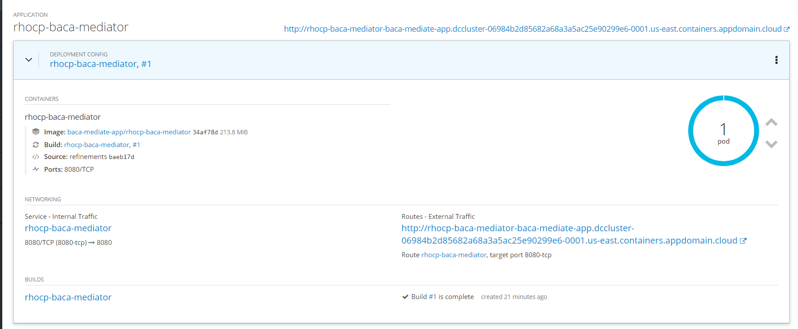
- You are taken to the pod summary and within that there is a
Logstab.
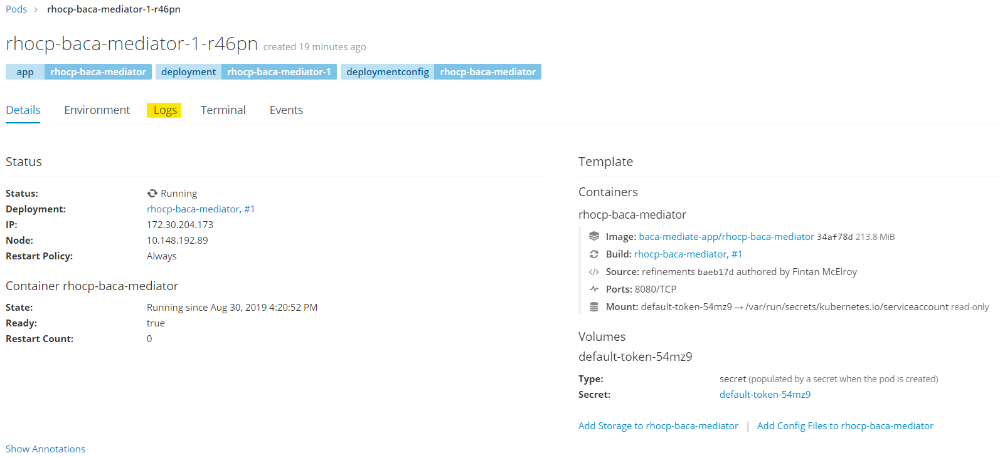
- In the
Logsyou can now verify that the micro-service is up and ready to accept requests.
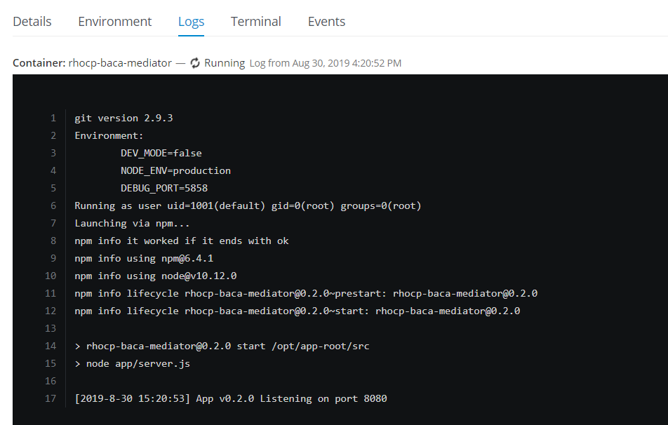